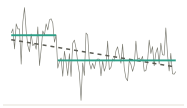
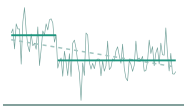
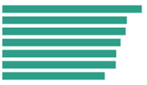

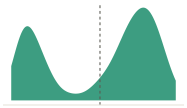
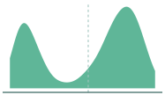
Distribution & uncertainty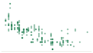
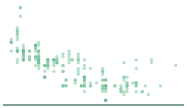
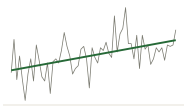
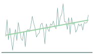
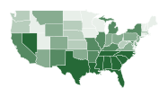
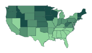
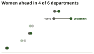
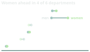
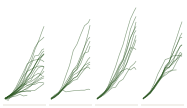
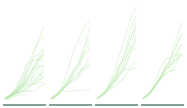
Part II · Week 3 of 8 · one continuous
Distribution & uncertainty
The mean hides the distribution, and an error bar means four different things to four different readers. Uncertainty is a design problem, not a statistical afterthought.
THE LECTURE
Distribution & uncertainty
Every number in a study has a shape behind it and a range around it. The lecture follows a survey of teenagers from the questions they were asked to the shapes their answers make, and then asks: if we surveyed them again, how different would the mean be? Four settings decide how much of a distribution a reader gets to see: how wide the bins are, how smooth the curve is, what stands in for the data, and what the whisker shows. Cases: Unknown Pleasures, the elephant curve, and the forest plot.
Open the slidesThe slides open in their own tab, so you can keep them beside this page. Day, time and room for every session are on the schedule.
THE WORK GROUP
Thursday · Part I · together
A worked example
The teacher builds one chart from Gapminder, step by step, and you run it too: a histogram that runs and lies, one row per country with filter(), a mean and a median per group with summarise(), geom_histogram with the binwidth treated as an argument rather than a default, geom_density and its bandwidth, box, violin and strip side by side, and the claim in the title.
Thursday · Part II · on your own
Your chart and its twin
A different chart from the same dataset, without code to copy: life expectancy in 2007. You draw it on paper in the room and start building it; the chart and its misleading twin you finish at home. Sketch, chart and twin are portfolio entry 2, and the only thing you hand in.
The data: Gapminder, 142 countries every five years from 1952 to 2007, held for two weeks, and not a dataset the lecture uses. One row is a country in a year, so every chart starts by choosing the year. Each country counts once, whatever its population: that is this week’s uncertainty note.
PORTFOLIO ENTRY 2
A distribution that does not flatten, and its twin: the same variable with the second peak hidden behind a mean and an error bar, or behind a flattering binwidth. Plus one sentence on which choice did the work.
As always: your sketch, a claim written as a sentence, uncertainty shown in some form, and code that runs from a clean session on someone else’s machine. One file: week-03-part2.html.
READINGS
Book · chapter 4 · read before Tuesday
Data Visualization: A Practical Introduction
Read it with Thursday’s build in mind: one continuous variable, a histogram whose binwidth is your choice, and a density whose bandwidth is too.
Healy, K. (2018). Data visualization: A practical introduction. Princeton University Press. https://socviz.co
Book · three chapters · read before Tuesday
Fundamentals of Data Visualization
Both Visualizing distributions chapters and Visualizing uncertainty. They are the two halves of Tuesday: what the mean hides, and what an error bar shows.
Wilke, C. O. (2019). Fundamentals of data visualization. O’Reilly. https://clauswilke.com/dataviz